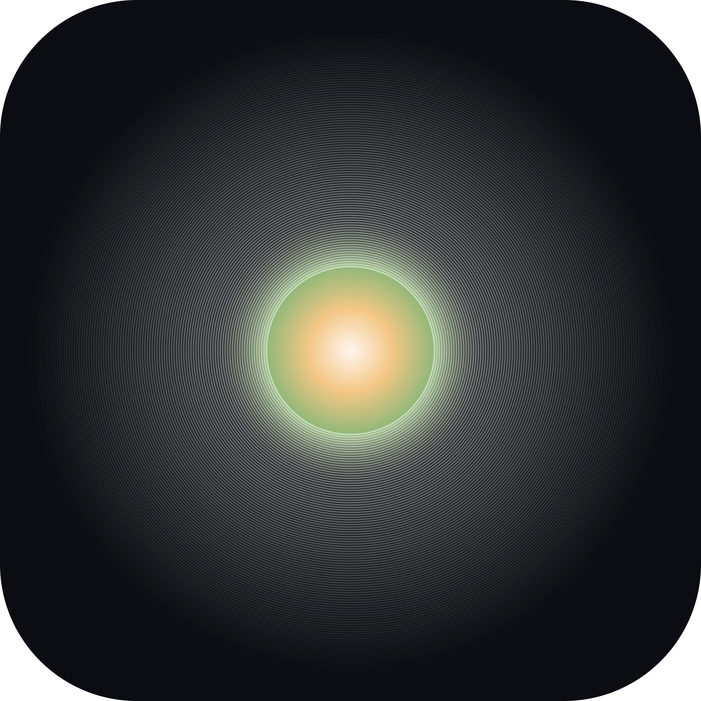

<!doctype html><html lang="zh-CN"><meta charset="utf-8"><meta name="viewport" content="width=device-width,initial-scale=1"><title>Aether · Canvas Logo</title><style>*{box-sizing:border-box}:root{font-family:Arial,"PingFang SC",sans-serif;color:#414844;background:#e9e9e5}body{margin:0}header{position:absolute;left:0;right:0;top:0;z-index:1;min-height:62px;display:flex;align-items:center;gap:24px;padding:18px 26px;font-size:11px;letter-spacing:1.3px;flex-wrap:wrap}header span{flex:1}a{color:inherit;text-decoration:none}a:hover{text-decoration:underline}main{height:100dvh;display:flex;align-items:center;justify-content:center;padding:28px}footer{display:flex;justify-content:center;padding:10px 28px 36px}.hero{display:block;width:min(72vh,70vw);height:auto}.samples{display:flex;flex-direction:row;gap:36px;font-size:11px;line-height:1.7}.samples figure{margin:0}.samples img{display:block;width:96px;height:96px;margin-bottom:10px}.note{color:#727a74;font-size:10px}a:focus-visible{outline:1px solid;outline-offset:4px}@media(max-width:800px){header{gap:14px;font-size:10px}.hero{width:min(72vh,85vw)}.samples{gap:24px}}</style><header><span>AETHER / CANVAS LOGO / 99 · FINAL</span><a href="ring-comparison.html">60 环对照</a><a href="references/logo-99-centered-44.svg" target="_blank" rel="noopener">上一版 44%</a><a href="references/logo-120.svg" target="_blank" rel="noopener">原稿 120</a><a href="canvas-logo.svg" target="_blank" rel="noopener">圆角 SVG</a><a href="canvas-logo-3072.png" target="_blank" rel="noopener">3072 PX</a><a href="AetherLogoCanvas.kt" target="_blank" rel="noopener">KOTLIN</a></header><main></main><footer><div class="samples"><figure><figcaption>设计整体缩到 48<div class="note">等比缩放后放大 2× 查看</div></figcaption></figure><figure><figcaption>99 条参数画在 48<div class="note">固定线宽，放大 2× 查看</div></figcaption></figure></div></footer></html>